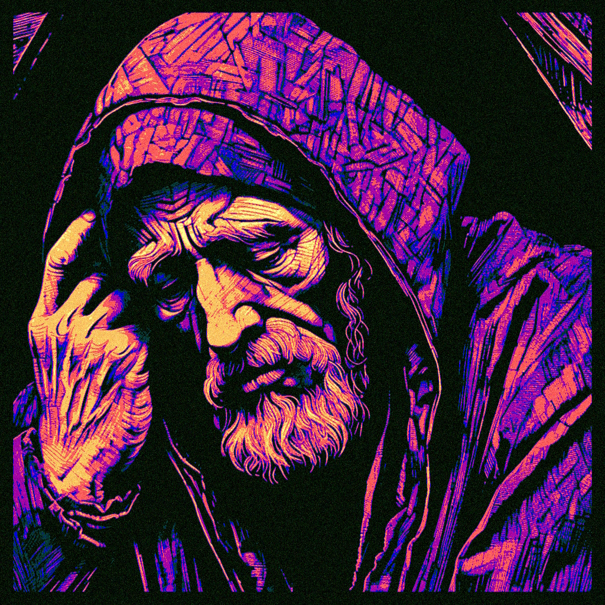

Images
Videos
Audio
Blog
Thoughts
Also known as a blog
Masters of Wisdom
Reflecting Vasugupta’s Spandakārikā
Beyond the Second Law: A Working Draft
Some Reflections on Nietzsche
Exaltation of the Living Symbol: An Essay
The Sophistry of Surfing: A Sermon on Terminology
The Qualitative Study of Number: An Essay

Carl Jung's 'Man and His Symbols: Book Review
The Astrology of King-Making (Video Companion)
The Astrology of King Making: An Essay on the Coronation